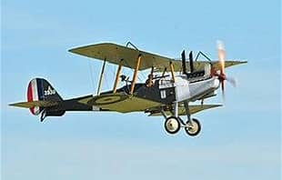

Hugh Stewart Latimer Jordan


Hugh Jordan worked for the Anglo-Egyptian Bank before joining the Honourable Artillery Company and later serving with the Royal Field Artillery. He transferred to the Royal Flying Corps as an observer. Hugh was killed aged 24 in a training flight accident near Addlestone on 20 August 1917.
Civilian Life - Hugh Jordan was born on 1 February 1893 in Harlesden, the son of Hugh Jordan, a merchant’s accountant, and Eleanor Jordan. The family later lived at Ranelagh Road and Napier Villas, Wembley, where Hugh was living in 1911 with his parents and younger siblings, Catherine Elizabeth and Henry Neville.
He was educated at the Lower School of John Lyon, Harrow, and before the First World War worked on the staff of the Anglo Egyptian Bank. Probate records show that at the time of his death he was living at 11 Napier Road, Wembley.
Military Life - Jordan joined the Honourable Artillery Company in January 1915 and went to Egypt in May of that year. It was perhaps by coincidence or by design that he served in Egypt and previously worked for the Anglo-Egyptian Bank. He subsequently returned to England and was given a commission in the Reserve of Officers of the Royal Field Artillery, serving in France for seven months. In May 1917 he returned to England to train as an observer with the Royal Flying Corps, and was attached to the Corps in July.
On 20 August 1917, Jordan was taking part in an observer training flight from Brooklands Aerodrome with Sergeant Ernest Handley, who was acting as pilot. They were aboard a Royal Aircraft Factory R.E.8 biplane (see photo above) which was used operationally for reconnaissance and artillery observation. At about 3,000 feet near Addlestone, Surrey, two explosions were heard and the aircraft entered a spinning nose-dive. The wings folded back and the aircraft crashed into a field, killing both men. At the inquest on the two bodies, evidence was recorded that "John Hoare, a gardener at Woodham Grange, said about ten o'clock on Monday morning he saw two machines in the air one above the other.
Suddenly there were two explosions, and the lower machine came straight down for some distance. It next took a horizontal course, with one plane, which suddenly folded back. The machine then pitched over some trees into a field. Witnesses ran across, and found Lieutenant Jordan and Sergeant Handley under the engine dead." Evidence was given that the machine was in perfect order when it went up from Brooklands Aerodrome. A verdict of death by misadventure was returned.
Jordan was 24 years old. He was buried at Wembley Old Burial Ground, and his gravestone records that he was accidentally killed while flying near Brooklands on 20 August 1917. He is also commemorated on memorials at St John the Evangelist, Wembley, and at the John Lyon School.